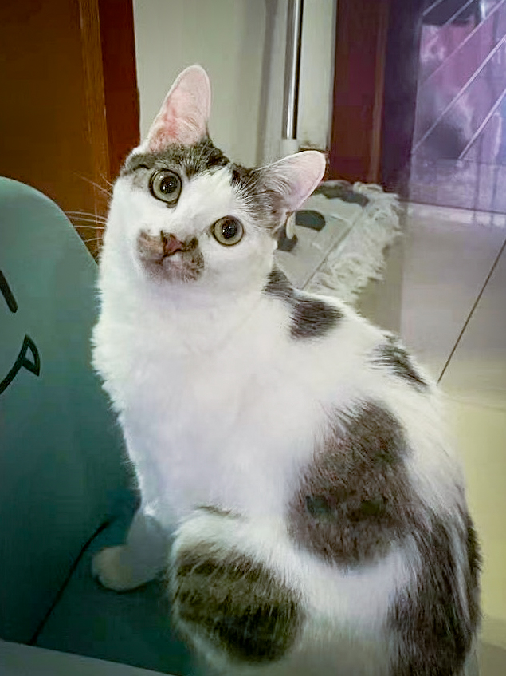

Rescued from the bustling streets of Shanghai, this tiny feline faced an uncertain fate near a crowded
market. Our team intervened, offering a lifeline to this kitten, bringing it to safety and providing the
care it desperately needed. Once vulnerable to the hazards of city life, this little one now thrives in
a secure and loving environment, a testament to the impact of our rescue efforts.
Discovered near a sewer, this kitten's story began in the shadows of urban challenges. Rescued from
potential dangers, it now revels in the warmth and security of a caring shelter. From the complexities
of city living to the tranquility of a safe haven, this rescued feline embodies the transformative power
of compassion.

Found in distress near a busy waterway, this kitten's fate took a positive turn with our intervention.
Liberated from the uncertainties of life on the streets, it now experiences the comfort and care it
deserves. This rescue story symbolizes the hope we bring to vulnerable creatures, offering them a chance
for a better life.
Safeguarded from the perils of urban life, this rescued kitten emerged from the shadows of an alley to
find refuge in our care. The challenges of city living are replaced with the security of a loving
environment, where this little one can grow and thrive. Our rescue efforts transform lives, ensuring
that each feline friend gets the second chance they deserve.
Rescued from a maze of sewer complexities, this kitten's journey reflects the resilience of these
vulnerable beings. Saved from potential harm, it now enjoys the safety and warmth of a compassionate
home. The story of this rescued feline is a testament to our commitment to making a difference in the
lives of those who cannot speak for themselves.
Pulled from the uncertainties of a bustling residential neighborhood, this little one found solace and
well-being in our rescue mission. The challenges of city life are replaced with the security of a loving
home, where this rescued kitten can flourish. Each rescue story is a triumph, turning adversity into a
tale of hope and transformation.
From the chaos of a crowded market to the safety of our shelter, this rescued kitten's journey
represents a shift from vulnerability to security. Our intervention ensures that it can now relish the
tranquility of a loving environment, free from the dangers of Shanghai's busy streets. This feline
friend embodies the impact of compassion and care.
Rescued from the perils of city living near a busy street, this kitten's story unfolds as it thrives in
a safe and nurturing environment. The challenges it faced in a bustling residential area are replaced
with the warmth and comfort of a loving home. Our rescue efforts create a haven for these vulnerable
creatures, offering them a chance for a brighter future.